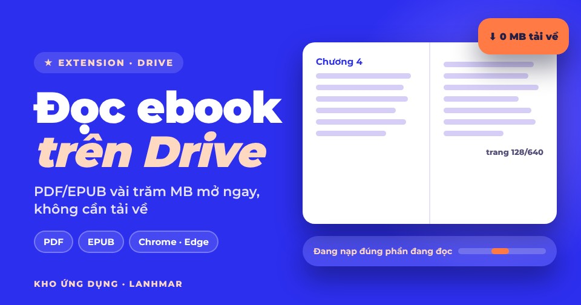

Đọc ebook lớn trên Google Drive, không cần tải về
PDF, EPUB và Google Docs/Slides lưu trên Drive mở ngay trong tab trình duyệt. Extension chỉ nạp đúng đoạn dữ liệu của trang bạn đang xem, nên file vài trăm MB mở nhanh dù Drive báo “không xem trước được”, và ổ cứng không nhận thêm byte nào.

Làm được gì
| Loại | Extension làm gì |
|---|---|
| Nạp theo đoạn 1 MB qua HTTP Range, render lười từng trang, phóng to, vừa chiều rộng, bôi đen và copy chữ, nhớ trang đang đọc | |
| EPUB | Mục lục, lật trang, đổi cỡ chữ, nhớ vị trí; file nạp vào bộ nhớ, không ghi xuống đĩa |
| Google Docs, Slides | Xuất PDF qua Drive API rồi đọc |
| Thư mục Drive | Dán link thư mục để thấy danh sách sách bên trong, mở thư mục con |
| File trên máy | Mở PDF/EPUB trong máy, không cần đăng nhập Google |
Cài đặt
- Tải ZIP ở nút trên, giải nén vào một thư mục cố định (ví dụ
D:\lanhmar\drive-ebook-reader). - Mở
chrome://extensions(Edge:edge://extensions), bật Developer mode, bấm Load unpacked, chọn thư mục vừa giải nén. ID extension luôn làbijcnaofiojlemmbghgcljfekdaoghbf. - Mở một file PDF/EPUB trên drive.google.com, bấm nút tím “Đọc không cần tải” ở góc dưới phải, đăng nhập Google và cho phép quyền chỉ xem Drive.
Lần đầu đăng nhập, nếu Google hiện “ứng dụng chưa được xác minh”, bấm Advanced rồi Go to Drive Ebook Reader. Hồ sơ xác minh với Google đang được nộp; trong lúc chờ, bạn cũng có thể nhắn Gmail cho mình để được thêm vào danh sách thử nghiệm.
Extension dùng dữ liệu Google của bạn như thế nào
- Xin duy nhất quyền
drive.readonly(chỉ xem). Chỉ đọc thông tin và nội dung của file bạn chủ động mở, hoặc danh sách file trong thư mục bạn mở. Không tạo, sửa, xoá, chia sẻ file; không duyệt toàn bộ Drive. - Dữ liệu đi thẳng từ
www.googleapis.comvề trình duyệt của bạn. Không có máy chủ của LANHMAR hay bên thứ ba, không phân tích, không quảng cáo. - Nội dung file chỉ nằm trong bộ nhớ tab khi đang đọc. Trên máy chỉ lưu vị trí đọc, cỡ chữ, giao diện.
- Thu hồi quyền bất cứ lúc nào tại myaccount.google.com/permissions.
Chi tiết trong Chính sách quyền riêng tư.
Cách hoạt động
- Đăng nhập bằng
chrome.identity, token do Chrome quản lý. - PDF.js nhận một
PDFDataRangeTransporttuỳ biến: mỗi lần cần dữ liệu nó gửi headerRangetới Drive API và nhận206 Partial Content, đoạn 1 MB, tắt tự tải nốt phần còn lại. - Chỉ render trang gần vùng nhìn, trang ở xa được giải phóng; thanh trên cùng hiện đúng lượng dữ liệu đã nạp.
- Thử nghiệm với PDF 24 MB: mở lấy khoảng 3 MB, nhảy tới trang 20 lấy thêm khoảng 4 MB.
Tác giả: Dương Thị Lan Anh (LANHMAR) · Kho báu · Chính sách quyền riêng tư · Liên hệ
Read large ebooks on Google Drive without downloading
PDF, EPUB and Google Docs/Slides stored in Drive open right in a browser tab. The extension fetches only the byte ranges of the page you are looking at, so files of several hundred MB open quickly even when Drive says “preview unavailable”, and nothing lands on your disk.
What it does
| Type | What the extension does |
|---|---|
| Fetched in 1 MB chunks over HTTP Range, lazy page rendering, zoom, fit width, text selection and copy, remembers your page | |
| EPUB | Table of contents, page turns, font size, remembers position; loaded in memory, never written to disk |
| Google Docs, Slides | Exported to PDF through the Drive API, then read |
| Drive folders | Paste a folder link to list the books inside and open sub-folders |
| Local files | Opens PDF/EPUB from your computer, no Google sign-in needed |
Install
- Download the ZIP above and unzip it into a permanent folder (for example
D:\lanhmar\drive-ebook-reader). - Open
chrome://extensions(Edge:edge://extensions), turn on Developer mode, click Load unpacked and pick the unzipped folder. The extension ID is alwaysbijcnaofiojlemmbghgcljfekdaoghbf. - Open a PDF/EPUB on drive.google.com, click the purple “Read without downloading” button at the bottom right, sign in with Google and allow view-only Drive access.
On first sign-in, if Google shows “this app isn't verified”, click Advanced and then Go to Drive Ebook Reader. Verification with Google is in progress; meanwhile you can also send me your Gmail to be added to the test list.
How the extension uses your Google data
- Requests only the
drive.readonlyscope (view-only). Reads only the metadata and content of the file you deliberately open, or the file list of a folder you open. Never creates, edits, deletes or shares files; never crawls your Drive. - Data flows directly from
www.googleapis.comto your browser. No LANHMAR or third-party server, no analytics, no ads. - File content stays in the tab's memory only while you read. Only reading position, font size and theme are stored on your device.
- Revoke access at any time at myaccount.google.com/permissions.
Details in the Privacy Policy.
How it works
- Signs in with
chrome.identity; the token is managed by Chrome. - PDF.js gets a custom
PDFDataRangeTransport: whenever it needs data it sends aRangeheader to the Drive API and receives206 Partial Content, 1 MB at a time, with background auto-fetch turned off. - Only pages near the viewport are rendered and far pages are released; the top bar shows exactly how much data has been fetched.
- Tested with a 24 MB PDF: opening fetched about 3 MB, jumping to page 20 another 4 MB.
Author: Dương Thị Lan Anh (LANHMAR) · Treasure · Privacy Policy · Contact